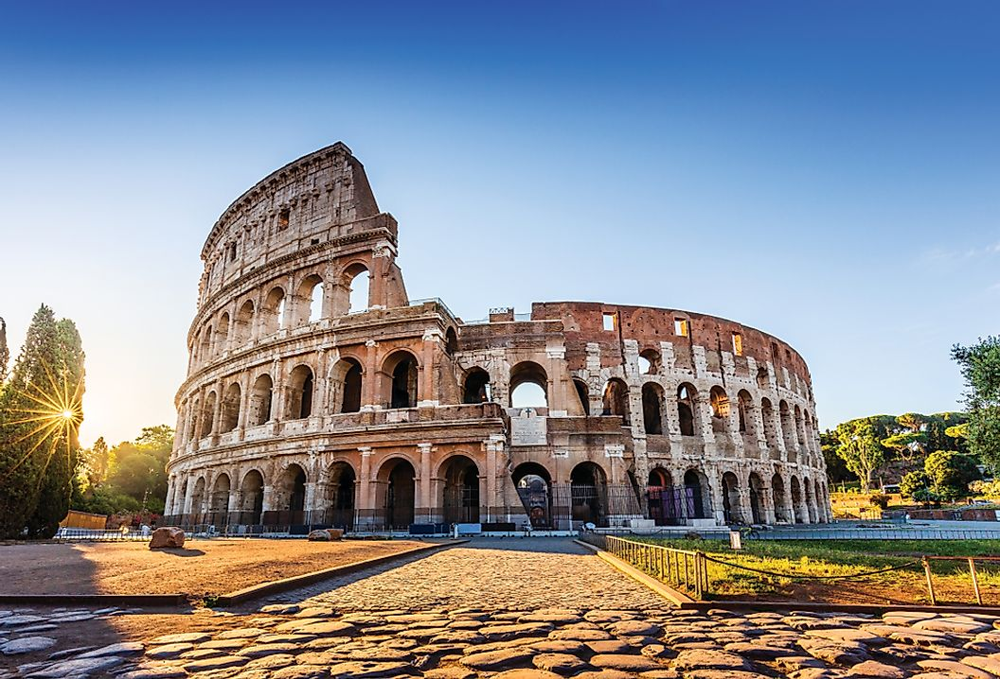
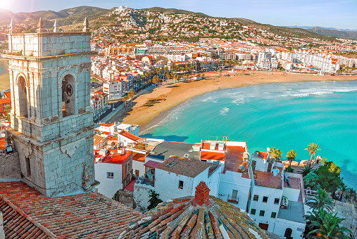

Germany

Germany. The country is synonymous with beer, sausages, “seriousness,” incredible hiking, majestic castles, and wild techno parties. It’s huge, diverse, and amazing.
Italy
Italy is a must-visit country and is one of the most-traveled destinations in Europe. There are so many highlights in this beautiful country — from the canals of Venice to the Tuscan wine lands to the cobblestone streets of Rome to the Arno river running through Florence to the cliffs of Positano… and beyond.
Spain
Spain is a country that moves slowly and runs late. The land of the siesta, it’s a place for foodies and night owls and anyone willing to slow down to enjoy the local pace of life.
Scotland

Scotland is not just the land of Braveheart, haggis, whisky, and sheepherders. It is filled with castles, stunning lochs and mountains, beautiful parks, whisky, and welcoming locals.